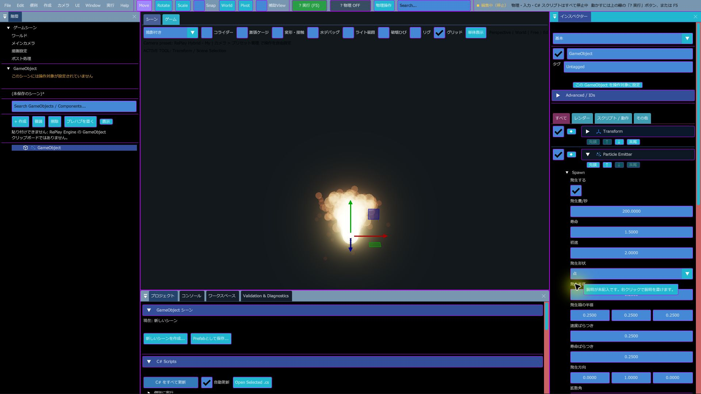
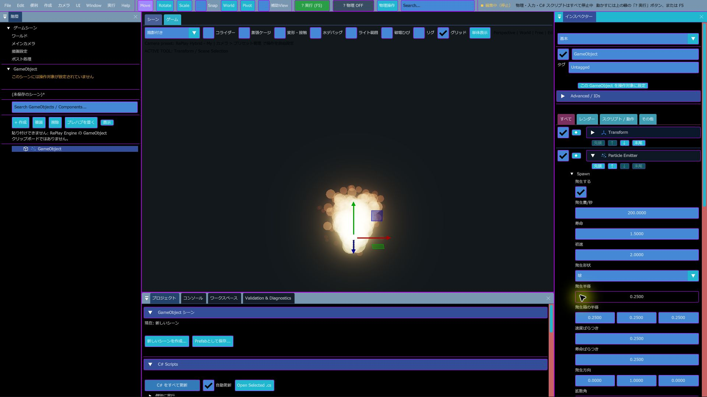
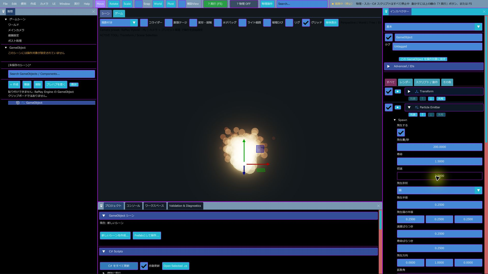

Particle Emitter
小さな粒（パーティクル）をたくさん出すコンポーネントです。火花、煙、光の粒などに使います。粒は常にカメラの方を向いた四角で、画像を貼れます。
こんなときに使う
- 火花、煙、光の粒などを出したいとき
- 爆発の瞬間など、決まったタイミングで粒をまとめて出したいとき
基本情報
| 項目 | 内容 |
|---|---|
| コンポーネントを追加での場所 | Rendering > Particle Emitter |
| 必須・推奨 | なし |
| 1 つの GameObject に | いくつでも付けられますが、動くのは有効なもののうち上の 1 つだけです（制限） |
| 光と影 | ライトの影響を受けず、影も落としません |
プロパティ
| 表示名 | 内部名 | 種類 | 既定値 | 範囲 | 説明 |
|---|---|---|---|---|---|
| 発生する | emitting | オン・オフ | オン | オンの間、粒を出し続けます | |
| 優先度 | priority | 整数 | 0 | -100〜100 | この版では使われていません |
| 発生量/秒 | spawn_rate | 小数 | 200 | 0〜20000 | 1 秒あたりに出す粒の数 |
| 寿命 | lifetime | 小数 | 1.5 | 0.01〜60 | 粒が消えるまでの秒数。粒ごとに 0.75〜1.25 倍のばらつきが付きます |
| 初速 | start_speed | 小数 | 2 | 0〜200 | 出たときの速さ。粒ごとに 0.75〜1.25 倍のばらつきが付きます |
| 重力 | gravity | 小数 | 1.8 | -100〜100 | 下向きに引っぱる強さ。マイナスにすると上へ昇ります |
| 抵抗 | drag | 小数 | 0.5 | 0〜20 | 大きいほど早く減速します |
| 開始サイズ | start_size | 小数 | 0.1 | 0.001〜100 | 出たときの粒の大きさ（m）。寿命の間に「終了サイズ」へ変わっていきます。 |
| 終了サイズ | end_size | 小数 | 0.02 | 0.001〜100 | 消える直前の大きさ。寿命に合わせてだんだん変わります |
| 開始色 | start_color | 色 | 橙 | 出たときの粒の色と不透明度。寿命の間に「終了色」へ変わっていきます。A を下げると薄く出ます。 | |
| 終了色 | end_color | 色 | 赤（不透明度 0） | 消える直前の色。不透明度を 0 にすると、消えるときにだんだん透明になります | |
| 発生方向 | direction | 3 つの小数 | 0, 1, 0 | 粒が飛ぶ中心の向き。GameObject の回転に合わせて向きが変わります | |
| 拡散角 | cone_angle | 小数 | 0.4 | 0〜3.14159 | 発生方向からどれだけ広がって飛ぶか（ラジアン）。0 でまっすぐ、1.57 で半球、3.14 で全方向 |
| 画像 | sprite | アセット（画像） | （空） | 粒に貼る画像。空なら白い四角です | |
| Material / Shader Graph | material_asset | アセット（Material） | （空） | Particle Renderer に Material を使います。Shader Composer の Surface グラフを Material から指定すると、色・発光・不透明度の計算を再利用できます | |
| 形状 | render_mode | 選択 | 円形粒子 | 円形粒子、速度ストリーク、連続水幕、リボン（CPU更新/GPU形状）、3Dメッシュ粒子（CPU）を選びます。連続水幕は幅のある透明メッシュで水流を描き、水面衝突と着水泡を併用できます。リボンと 3D メッシュ粒子は下の項目を見てください | |
| 合成 | blend_mode | 選択 | 加算 | 通常、加算、乗算、スクリーン。加算にすると、粒が重なった所が明るく光ります。炎や火花向きです | |
| 最大数 | max_particles | 整数 | 10000 | 1〜65536 | 同時に存在できる粒の数。超える分は出ません。入力は 65536 までで、GPU駆動では 65536、CPU では 10000 で打ち切ります |
| GPU駆動 | gpu_simulation | オン・オフ | オフ | 粒の発生・移動・寿命・描画を GPU で行います。粒が多いときに軽くなります。画像を設定すれば GPU駆動でも粒に貼られます。画像が空なら丸い形の粒になります（下を見てください） |
滝（連続水幕）の見た目（2026-10-13 追加）
形状を 連続水幕 にしたときの、滝の水の色・透け方・流れ筋の項目です。円形粒子・速度ストリークのときは使いません。
| 表示名 | 内部名 | 既定値 | 範囲 | 説明 |
|---|---|---|---|---|
| 滝の浅い色・深い色・泡の色 | water_shallow_color、water_deep_color、water_foam_color | 青緑・濃い青緑・白 | 水幕の薄い所と厚い所の色、泡の色 | |
| 滝の粗さ | water_roughness | 0.52 | 0〜1 | 小さいほど表面がつるっとして映り込みが鋭くなる |
| 滝の反射・滝の屈折・滝の吸収 | water_reflection_strength、water_refraction_strength、water_absorption | 0.18・0.12・0.12 | 0〜2・0〜1・0〜4 | 周りの映り込み、奥のゆがみ、厚い所ほど色が濃くなる強さ |
| 滝の泡の強さ | water_foam_strength | 0.9 | 0〜2 | 流れ筋と着水の泡の濃さ |
| 滝の色グラデーション・上から中間への割合・着水色の開始割合・色変化の分布 | water_gradient_strength、water_gradient_top_end、water_gradient_base_start、water_gradient_power | 0.48・0.42・0.88・0.9 | 0〜1・0.05〜0.9・0.1〜1・0.25〜3 | 落ち口から着水点までの色の変わり方。上の割合までが落ち口の色、着水色の開始割合から下が着水の白っぽい色 |
| 水幕の奥行き | waterfall_curtain_depth | 2.75 | 0.1〜8 | 水幕の厚み |
| 流れ筋の数・幅・厚み | waterfall_stream_count、waterfall_stream_width、waterfall_stream_depth | 10・0.58・0.30 | 1〜16・0.2〜1.6・0.05〜2 | 水幕の中を流れる筋の本数・幅・厚み |
| 流れの横揺れ・流れの長さのばらつき | waterfall_flow_wander、waterfall_flow_length_variation | 0.14・0.34 | 0〜1.5・0〜0.8 | 流れ筋が左右に揺れる量と、筋ごとの長さの違い |
| 水幕のうねり | waterfall_surface_fold | 0.72 | 0〜2.5 | 水幕の表面の波打ち |
| 流れ筋の濃さ | waterfall_stream_opacity | 0.22 | 0.05〜1 | 流れ筋の不透明さ |
粒子と飛沫には Surface Material を、連続水幕には Water Output を持つ Material を割り当てて見た目を差し替えることもできます（Particle Editor の Material）。
2026-10-22 に増えた項目
インスペクターの分類名が日本語になりました（基本・発生・力・運動・外観・カーブ・描画・シミュレーション・水との相互作用・水の描画）。そのうえで、次の分類と項目が増えています。
発生形状と表面からの発生（分類：発生）
- 「発生形状」に 円盤・リング・メッシュ表面 (CPU) が増えました。リングは「リング内側半径」で穴の大きさを決めます
- メッシュ表面では「表面発生の元モデル」（空なら自分）の表面から出ます。静的・Skinned・内蔵メッシュに対応。「表面法線への噴射方向補間」を 1 にすると表面から外へ噴き出します（空気漏れ・煙向き）
- Skinned のアニメに合わせるなら「アニメーション姿勢に追従」をオンにし、「姿勢の更新間隔 (フレーム)」（1〜120）で重さを調整します
VFXタイムライン（分類：VFXタイムライン・時間制御）
「タイムラインを使用」をオンにすると、決めた時間だけ発生し、繰り返し、決めた時刻に Burst を出します。
| 表示名 | 内部名 | 範囲 | 説明 |
|---|---|---|---|
| タイムラインを使用・起動時に再生・ミュート | timeline_enabled・timeline_play_on_start・timeline_muted | ||
| 開始時刻（秒）・発生時間（秒） | timeline_start・timeline_duration | 0〜120 | |
| 繰り返す・ループ間隔（秒） | timeline_loop・timeline_loop_gap | 0〜60 | |
| Burst時刻（各ループ内）・Burst粒子数 | timeline_burst_time・timeline_burst_count | 0〜65536 | 1 回だけまとめて出す |
| Burstマーカーデータ | timeline_burst_track_data | 複数の Burst。VFX制作ルームのタイムラインから編集する | |
| 再生速度 | timeline_speed | 0〜16 | |
| 固定乱数Seed | editor_random_seed | 0〜 | 0 以外にすると、再生のたびに同じ粒の出方になる |
Flipbook（コマ送り画像）
素材：コマを格子に並べた 1 枚の画像（例：8 列 × 8 行の爆発の連番）。「画像」に入れ、「Flipbookを有効化」をオンにして「列数」「行数」（1〜32）を合わせます。「再生基準」が寿命なら粒の一生で全コマ、FPS なら「再生FPS」で再生します。「開始コマ」「コマをループ」「フレーム間補間」（コマの間をなめらかに）もあります。
寿命カーブとグラデーション（分類：外観・カーブ／グラデーション）
- サイズ・不透明度・発光（「寿命中の発光カーブ」）・回転（「寿命による追加回転 (rad)」）を、4 点のカーブか、任意個のキー（「〜キー位置」と「〜キー値」を同じ数だけ）で決められます
- 補間は「寿命カーブを滑らかにする」で全体を、各曲線の「〜の補間」（全体設定／線形／滑らか）で個別に決めます
- 「寿命グラデーションを使う」をオンにすると、開始色→中間色1→中間色2→終了色の 4 色、または「任意キー色」と「任意キー位置」（2〜64 個）で色が変わります
- 分類「キラキラ」：「星形スプライト」を 4本の光条 にすると、画像なしで十字に光る粒になります。「明滅速度 (Hz)」「明滅の強さ」で瞬かせます
リボンと 3D メッシュ粒子
- リボン（形状：リボン）：粒をつないで帯にします。剣の軌跡・レーザー・彗星の尾向き。「リボン始点幅・終点幅 (m)」「リボン始点・終点ねじれ (度)」「幅カーブ」、「途切れ距離 (m)」（これより離れた粒はつながない）、「最大サンプル点数」、「曲線補間」（0〜8）、「UV方式」（全体に伸縮／距離でリピート）、「UVタイル距離」「UVスクロール量」
- 3D メッシュ粒子（形状：3Dメッシュ粒子）：粒の代わりに立体を飛ばします。破片・薬莢向き。「3D形状 (0=Cube, 1=Octahedron)」か「複製するメッシュ」（シーンの GameObject のメッシュを使う）。「Mesh初期回転をランダム化」「Mesh角速度のばらつき」「Meshスケールのばらつき」「3Dメッシュ倍率」。遠くは「Mesh描画最大距離 (m)」「最小画面直径 (px)」「画面LODフェード幅 (px)」で描画だけ省きます
VFXマテリアル（GPU Sprite 用）
「VFXマテリアルを有効化」をオンにすると、GPU駆動の Sprite に次の効果を掛けられます。共通の設定は「共有VFX Material」（.replayvfxmaterial）に保存して使い回せます。
- Soft Particle（深度フェード）：地面との交わりの硬い線を消す。「深度フェード距離(m)」
- 屈折：背景をゆがめる（陽炎・衝撃波）。「屈折強度」（0〜0.1）、「屈折の深度境界(m)」
- UV：「UV繰り返しXY」「UV移動速度XY」。ノイズ：「ノイズ周波数」「ノイズ移動速度」「ノイズマスク強度」
- マスク：「マスク形状」（なし・円・菱形・縦帯・輪郭）、「外部マスク画像」と「マスク参照チャンネル」（Alpha・R・G・B・輝度）。素材：白黒のマスク画像
- Dissolve：「Dissolveを有効化」「Dissolve進行度」「発光縁の幅」「発光縁の輝度」「Dissolve発光色」「寿命中のDissolve 4点」。燃え尽きるように消す
- 「高品質エッジAA」「TAA Reactive Maskの強さ」（TAA で粒が残像になるときに上げる）
VFX Light（粒で周りを照らす）
- 「Emitter Lightを有効化」：Emitter の位置に影なしの Point Light を 1 つ置きます（シーン全体で最大 64 個）。「ライト色」「ライト強度」「ライト範囲」と、「ライト曲線周期」で明滅させる曲線
- 「粒子ライトを有効化」：生きている粒の位置にライトを置きます。「粒子ライト数」（1〜16）、「粒子ライト強度」「粒子ライト範囲」、寿命に合わせたフェード（「寿命によるライト強度」「寿命によるライト範囲」）。明るく目立つ粒から選ばれます
衝突と衝突デカール
- 分類「衝突」：「GPU固体衝突」で画面の深度に対して粒を跳ね返します。「衝突半径 (m)」「反発係数」「摩擦」
- 分類「水との相互作用」：「GPU水面接触」で GPU 粒子も水面に当たります
- 分類「VFX Impact」：「衝突デカールを出す」で、当たった所に面に沿った跡を残します。素材：跡の画像（「衝突デカール画像」）と、凹凸を付けるなら法線画像。「幅」「奥行き」「寿命」「消失時間」「上限」（1〜256、超えると古い物から消える）。動く物に当たった跡はその物に付いて動きます
連鎖（Sub Emitter）とイベント
粒が「固体に当たった」「指定時刻になった」「生まれた」ときに、別の Emitter から子粒子を出します（花火の二段割れ・着弾の火花など）。親と子の Emitter で「VFX 連鎖ルート」に同じ GameObject を入れ、送信側で「固体衝突時に送信」などのチャンネルを決めます。「子粒子数 / イベント」（1〜256）、「最大連鎖世代」（1〜8）、「速度継承割合」、「親粒子の色を掛ける」、「子粒子拡散半径 (m)」、「接触イベント間隔（秒）」。
軽量化 / LOD
- 「距離LODを有効化」：「LOD開始距離」〜「LOD終了距離」で、遠いほど継続発生を「遠距離の発生率」まで減らします。Burst と出ている粒は減らしません
- 「画面サイズLODを有効化」：画面上で小さく見えるときに発生を減らします（半径 px で指定）
- 「CPU粒子の視錐台カリング」：画面外の CPU 粒子は描画の準備をしません（動きは続きます）
VFX の素材：ひな形と VFX アセット
エフェクトを一から作らなくても、Window > VFX制作ルーム の「クイック作成（オブジェクト選択不要）」でひな形を選ぶと、GameObject と Emitter（必要なら複数）が作られます。検索欄で名前を絞り込め、☆でお気に入りにできます（「★だけ」で絞り込み）。
| 分類 | ひな形 |
|---|---|
| 基本 | 空のVFX、煙、火花、爆発、爆発の煙、爆発の火球、炎、砂塵、落ち葉、風の渦、衝撃波、キラキラ魔法、エネルギー弾、金属破片 |
| 水・氷 | 水しぶき（一式・霧・飛沫）、氷の破裂、氷の破片、氷晶シャワー、氷晶爆発一式、氷晶の守護陣（結晶弾・中心光） |
| 電撃 | 雷撃、雷撃の火花、電撃アーク（一式・着弾火花） |
| レーザー | レーザー、赤色・パルス・プラズマ・高輝度レーザー（各着弾火花・外側光・先端火花）、緑色・青色・紫色レーザー（各一式・火花・外側光・先端火花）、氷結レーザー（氷片・凍結波）、荷電粒子砲（着弾火花・衝撃波） |
| 武器・攻撃 | 銃口エフェクト一式（閃光・煙・火花）、火炎放射（一式・火花）、毒霧（一式）、隕石着弾（火花・煙）、風刃の軌跡 |
| 魔法・宇宙 | 回復オーラ（一式・柔らかな光）、魔法の屈折波、魔法シールド、深淵のポータル（周回粒子・中心光）、星屑の渦、彗星（一式・尾）、太陽フレア（噴出火花・衝撃波）、重力崩壊（落ちる粒子・周回火花）、深淵の星雲（星屑・衝撃波） |
「一式」は複数の Emitter を組み合わせた完成品です。作ったあとは普通の Emitter と同じように値を変えられます。
VFX アセット（.replayvfx）で保存・再利用
- 「VFXアセット (.replayvfx) — 保存・再利用」の欄で、選んだ VFX（複数 Emitter をまとめたもの）を 選択VFXを新しいアセットとして保存 すると、
resources/Effects/VFX/に保存されます - 「保存済みVFXを選ぶ」で選び、選んだVFXをSceneに配置 で別のシーンにも置けます（毎回別のインスタンスになります）
- 依存素材込みで配布フォルダーを作成：画像やマテリアルも含めて
Saved/VfxPackages/に書き出します。別の PC では VFX配布フォルダーを取り込む で resources へ配置し、Asset Database に登録します - Project の Create > Data に「VFX Material」（
.replayvfxmaterial）と「VFXノード部品」（.replayvfxgraph。計算グラフの再利用部品）が増えました
粒の動き方
- 粒は GameObject の位置から出ます。出たあとは GameObject が動いても付いてきません。
- 重力はワールドの真下向きにかかります。GameObject を傾けても重力の向きは変わりません。
- 大きさは寿命に合わせて 開始サイズ から 終了サイズ へ、色は 開始色 から 終了色 へ変わります。色は寿命を 8 段階に分けて変わります。
GPU駆動にしたとき
- 画像 を設定しても GPU駆動で動き、粒ごとに画像を貼ります（以前は画像があると CPU に戻っていました）。
- 色・大きさ・重力・抵抗・拡散角・合成などの設定は同じように効きます。
Emit(count)とClear()も使えます。 - GPU駆動の Emitter は、同じ GameObject に複数付けてもそれぞれ動きます（CPU のときの「上の 1 つだけ」の制限はありません）。
- C# では
GpuSimulation（オン・オフ）で切り替えられます。
C# スクリプトから操作する
C# では ParticleEmitterComponent 型で操作します。
| メンバー | 働き |
|---|---|
Play() | 発生する をオンにします |
Stop() | 発生する をオフにします |
Emit(count) | 次のフレームに count 個の粒をまとめて出します（最大数まで）。爆発の瞬間などに使います |
Clear() | 出ている粒をすべて消します |
プロパティは Motion でも動かせます。発生量や寿命を時間で変えると、勢いの強弱が付けられます。
制限
- 1 つの GameObject に複数の Particle Emitter を付けても、動くのは有効なもののうち一番上の 1 つだけです（GPU駆動のものを除く）。いくつも出したいときは、GameObject を分けてください。
- 優先度 は、この版では効きません。
- 発生する をオフにすると、新しい粒が出なくなるだけでなく、出ていた粒も表示されなくなります。もう一度オンにすると、止まっていた粒が続きから動きます。
- そのため、発生する がオフのまま
Emit(count)を呼ぶと、粒は出たフレームだけ表示され、すぐに見えなくなります。まとめて出すときは 発生量/秒 を 0 にし、発生する はオンのままにします。
使い方
爆発の瞬間に火花を出す
- 空の GameObject を作り、コンポーネントを追加 > Rendering > Particle Emitter を付けます。
- 発生量/秒 を 0 にします（発生する はオンのまま）。
- 拡散角 を 3.14、初速 を 5 にすると、全方向に飛び散ります。
- C# スクリプトで、爆発したときに
Emit(100)を呼びます。
新規シーンから作る：発生形状を比べる
以下は新規シーンで空の GameObject を作り、Particle Emitter を追加した実画面です。Emitter の「発生形状」を切り替えて、点・球・箱の3パターンを確認できます。撮影時は発生量 200/秒、寿命 1.5 秒、初速 2、各半径 0.25 の設定です。同じ色・速度・重力のため形状差は小さく見えます。見た目を大きく変えるには、発生方向・拡散角・重力・寿命・色を合わせて調整してください。
- File > New Empty Scene で新規シーンを開きます。
- Hierarchy の「+作成」で空の GameObject を置き、Inspector の「コンポーネントを追加」から Rendering > Particle Emitter を追加します。
- Inspector の「発生形状」を「点」「球」「箱」に切り替え、Viewport で流れ方を見比べます。
- 発生量/秒、寿命、初速を調整して密度と勢いを整えます。火花は短い寿命・高い初速・広い拡散角、煙は低い初速・長い寿命・上向きの発生方向が出発点です。
- 重力・抵抗・開始色・終了色を調整します。煙のように浮かせるには重力を弱めるか負にし、終了色の Alpha を 0 にします。
| パターン | 形状 | 画面 |
|---|---|---|
| 点から上へ出す噴き上がり | 点 |  |
| 球の中心から広げる | 球 |  |
| 箱の範囲から散らす | 箱 |  |